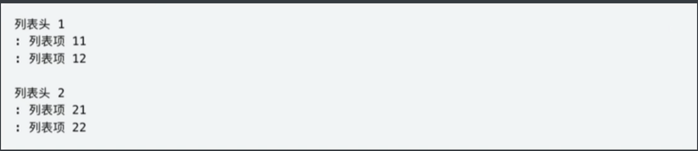

MarkDown介绍
Markdown 是一种轻量级的标记语言，它允许人们使用易读易写的纯文本格式编写文档
Markdown编写的文档可以导出HTML、Word、图像、PDF、Epub等多种格式的文档.
可点击左下角符合如下图进入源代码模式
1. 标题
Markdown的标题和HTML的标题一致，分为6级，分别在一行的开头放一到六个#加空格再加标题内容，在html中打开会生成对应的h1到h6标签
除了前面加#外，标题1和标题2也可以用下面加横线的形式。标题下面加等号=会生成标题1，加减号一会生成标题2。
2. 段落
在Markdown里面直接顶行写一些文本就会生成段落，各个段落之间以空行分割
Markdown里面的段落前面不能有超过一个空白字符（空格、制表符等）。前面如果有超过一个空格或制表符，该行文本会被生成代码块(
..…
)段落后面也不能有超过一个空白字符（空格、换行符等）。如果有超过一个换行符，会生成两个段落。如果有超过一个空格，会生成换行标签br。
3. 换行
4. 字体样式
4.1 粗体
在需要加粗的文本前后添加两个星号或下划线可以对文本加粗
4.2 斜体
在需要加粗的文本前后添加一个星号或下划线可以对文本加粗
4.3 粗斜体
在需要加粗的文本前后添加三个星号或下划线可以倾斜并加粗文本
4.4 删除线
在需要加粗的文本前后添加两个波浪号可以添加删除线
5. 列表
5.1 有序列表
在文本前面添加数字加点加空格可以构成有序列表。如下表，最终生成的列表前面的编号和前面的数字没有绝对关系，是从第一个数字开始依次增加。
也有很多Markdown解析器完全忽略前导数字，总是从1开始。
5.2 无序列表
无序列表可以在文本前面加减号、星号、加号实现。
5.3 列表嵌套
有序列表、无序列表都是可以嵌套的。在列表项前面添加两个以上空格或制表符可以吧改行变成子列表。
5.4 任务列表
有序列表和无序列表都可以作为任务列表使用，任务列表会在每项前面添加一个复选框。
会生成以下效果(在网页中才生效)
5.5 定义列表（不是所有的Markdown编辑器都支持）
Markdown代码

生成下面的HTML代码
6. 引用
6.1 语法
Markdown可以使用大于号和空格生成引用
双标签
下面的代码
生成的效果（不同的Markdown编辑器效果不同）
6.2 引用多个段落
下面的代码
生成的效果
6.3引用嵌套
在一个引用块里面还可以再引用其他段落。在段落的前面加多个小于号可以达成多重嵌套的目的。
下面的代码
生成的效果
注：引用中可以存在列表、粗斜体等
7.1行内代码
使用一对反引号(`)来创建行内代码。如果在行内代码中需要包含反引号本身，可以使用两个反引号对加前后空格来创建。
7.2 代码块
将文本的每一行缩进至少四个空格或一个制表符。这样这些文本会变成代码块。
下面的代码
会生成下面的效果
7.3 围栏式代码块（常用）
在很多 Markdown 解析器里都支持使用三个反引号(```)或三个波浪号(~)来定义围栏式代码块。同时这种代码块配合插件还可以做到代码高亮、行号等高级功能。
如果在代码块中也存在三个反引号或波浪号，可以在外层使用 4 个。
注意
下面的代码有高亮显示效果，这并不是 Markdown 本身的功能，而是通过第三方插件 Prism.js 做到的。一般在开始的三个反引号或波浪号的后面加代码语言可以指定代码的语言从而可以使用第三方插件做到高亮效果。
下面的代码
会生成下面的效果
8. 分隔线
一行只存在连续三个或以上星号(*)、减号(-)或下划线(_)会被生成分隔线(<hr/>)
以下代码
会生成以下效果
注意
- 在使用分隔线时一行在分隔线的上下各留一行空白行。
- 虽然星号、减号和下划线都能构成分隔符，但一般使用减号，输入更方便。
9. 超链接
在 Markdown 里可以创建超链接，以链接到其他 Markdown 页面或网站。